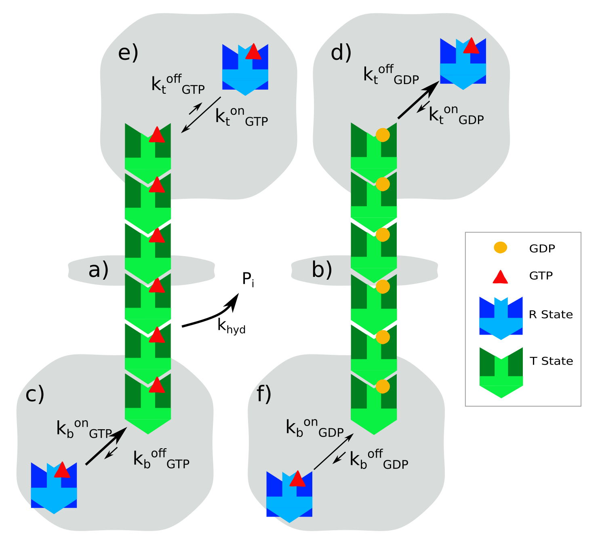

FtsZ is a bacterial cell division protein. It lines up head to tail to form single stranded protofilaments (PFs). These PFs gather at the mid cell to produce the Z ring. The Z ring constricts to divide the cell into two daughter cells.
Over the past two decades, it has become increasingly clear that FtsZ treadmills. Treadmilling is when subunits primarily add to one side and subtract from the other side of a PF. This produces an overall net movement of the PF, but individual subunits remain in place.
It was not clear how a single stranded PF could attain polarity needed for treadmilling. I developed a computational model that showed that directional treadmilling can be obtained with 1) a conformational switch within individual FtsZ subunits and 2) stochastic GTP hydrolysis. Furthermore, this same conformational switch drives nucleation to produce cooperative assembly.
Below is a diagram of the basic reactions included in this model. I used Gillespie's algorithm with partial equilibrium to model this reaction. I wrote the model in Matlab.
The model and related analysis can be accessed on Github. This work was published in the Biophysical Journal in August 2020.